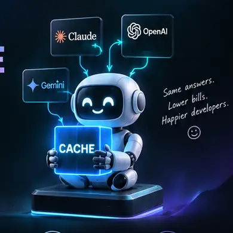

⚡
L1 exact cache
Fast deterministic request matching for repeated work.
Stop paying for the same tokens twice. A local, multi-provider caching proxy that replays unchanged work at sub-millisecond speed while keeping your code on your machine.

Coding agents repeatedly read files, inspect directories, run deterministic tools and resend context. OmniCache puts a local memory layer in front of that loop.
OmniCache checks local state first. Only cache misses travel upstream.
The repository combines deterministic tool replay, persistent storage, workspace validation, protocol translation and provider routing.
Fast deterministic request matching for repeated work.
Near-duplicate and intent-aware lookup for reusable knowledge.
Workspace changes invalidate affected entries so stale results don't silently persist.
Persistent local storage for tool outputs, signatures and cache state.
Query, store, search, replay, health and telemetry tools for agent workflows.
Loopback-first architecture with local processing and explicit upstream misses.
Run the project's benchmark command yourself rather than trusting a marketing number.
$ pip install omnicache-proxy $ omnicache doctor $ omnicache benchmark $ omnicache run claude cache.hit → local cache.miss → upstream workspace → validated tool replay → enabled
Start locally, inspect the architecture, run the benchmarks, and decide where caching belongs in your stack.